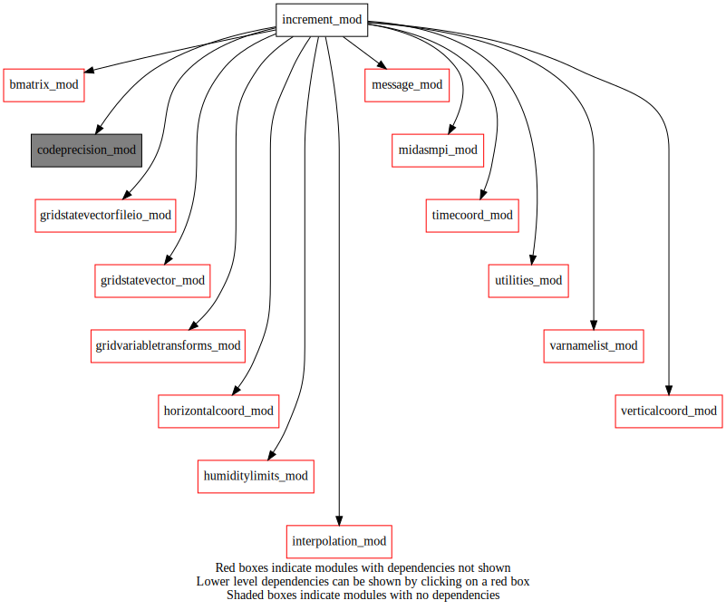
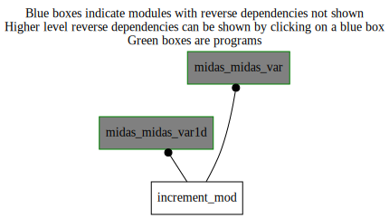

Dependency Diagrams:
 Direct Dependency Diagram¶
 Reverse Dependency Diagram¶
Description
MODULE increment_mod (prefix=’inc’ category=’1. High-level functionality’)
- Purpose
To add a 4D increment to a given 4D background/reference state and to output the results
Quick access
- Routines
inc_analpostprocessing(),inc_computehighresanalysis(),inc_getincrement(),inc_interpolateandadd(),inc_writeanalysis(),inc_writeincandanalhighres(),inc_writeincrement(),readnamelist()Needed modules
codeprecision_mod: MODULE codePrecision_mod (prefix=’pre’ category=’8. Low-level utilities and constants’)
midasmpi_mod: MODULE midasMpi_mod (prefix=’mmpi’ category=’8. Low-level utilities and constants’)
timecoord_mod: MODULE timeCoord (prefix=’tim’ category=’7. Low-level data objects’)
gridstatevector_mod: MODULE gridStateVector_mod (prefix=’gsv’ category=’6. High-level data objects’)
gridstatevectorfileio_mod: MODULE gridStateVectorFile_mod (prefix=’gio’ category=’4. Data Object transformations’)
interpolation_mod: MODULE interpolation_mod (prefix=’int’ category=’4. Data Object transformations’)
horizontalcoord_mod: MODULE HorizontalCoord_mod (prefix=’hco’ category=’7. Low-level data objects’)
verticalcoord_mod: MODULE verticalcoord (prefix=’vco’ category=’7. Low-level data objects’)
humiditylimits_mod: MODULE humidityLimits_mod (prefix=’qlim’ category=’4. Data Object transformations’)
utilities_mod: MODULE utilities_mod (prefix=’utl’ category=’8. Low-level utilities and constants’)
message_mod: MODULE message_mod (prefix=’msg’ category=’8. Low-level utilities and constants’)
gridvariabletransforms_mod: MODULE gridVariableTransforms (prefix=’gvt’ category=’4. Data Object transformations’)
bmatrix_mod: MODULE BMatrix_mod (prefix=’bmat’ category=’2. B and R matrices’)
varnamelist_mod: MODULE varNameList (prefix=’vnl’ category=’7. Low-level data objects’)Variables
Subroutines and functions
- subroutine increment_mod/readnamelist()¶
- Purpose
Reading NAMINC namelist by any subroutines in increment_mod module.
- Called from
cfn_sumjo(),qlim_getminvaluecloud(),qlim_getmaxvaluecloud(),inc_computehighresanalysis(),inc_writeanalysis()- Call to
- subroutine increment_mod/inc_computehighresanalysis(statevectorinclowres, statevectorupdatehighres, statevectorpsfchighres)¶
- Arguments
statevectorinclowres [struct_gsv ,in]
statevectorupdatehighres [struct_gsv ,inout]
statevectorpsfchighres [struct_gsv ,out]
- Called from
- Call to
msg(),msg_memusage(),utl_tmg_start(),readnamelist(),gsv_isallocated(),utl_abort(),gsv_varexist(),tim_getstamplist(),tim_getdatestamp(),gsv_gethco(),gsv_getvco(),gio_getmasklam(),gsv_allocate(),gsv_copy(),int_interp_gsv(),gsv_deallocate(),int_vinterp_gsv(),gsv_add(),int_tinterp_gsv(),inc_interpolateandadd(),utl_tmg_stop()
- subroutine increment_mod/inc_analpostprocessing(statevectorpsfchighres, statevectorupdatehighres, statevectortrial, statevectorpsfc, statevectoranal)¶
- Arguments
statevectorpsfchighres [struct_gsv ,inout]
statevectorupdatehighres [struct_gsv ,in]
statevectortrial [struct_gsv ,out]
statevectorpsfc [struct_gsv ,out]
statevectoranal [struct_gsv ,out]
- Called from
- Call to
msg(),msg_memusage(),utl_tmg_start(),gsv_gethco(),gsv_getvco(),gsv_allocate(),tim_getdatestamp(),gsv_zero(),gio_readtrials(),gsv_varexist(),gsv_copy(),gsv_deallocate(),gsv_varkindexist(),utl_tmg_stop()
- subroutine increment_mod/inc_writeincandanalhighres(statevectortrial, statevectorpsfc, statevectoranal)¶
- Purpose
Write the high-resolution analysis increments to the rehm file.
- Arguments
statevectortrial [struct_gsv ,inout,target]
statevectorpsfc [struct_gsv ,inout]
statevectoranal [struct_gsv ,inout]
- Called from
- Call to
msg(),msg_memusage(),utl_tmg_start(),tim_getstamplist(),tim_getdatestamp(),gsv_gethco(),gsv_getvco(),gsv_varexist(),gsv_getheightsfc(),gsv_varnameslist(),gsv_allocate(),gsv_copy(),gsv_add(),gsv_zero(),gsv_transposetilestostep(),gio_writetofile(),gsv_deallocate(),utl_tmg_stop()
- subroutine increment_mod/inc_getincrement(incr_cv, statevector_incr, nvadim_mpilocal)¶
- Purpose
Get true analysis increment from control vector.
- Arguments
incr_cv (*) [real ]
statevector_incr [struct_gsv ]
nvadim_mpilocal [integer ]
- Called from
- Call to
utl_tmg_start(),bmat_sqrtb(),gsv_varexist(),msg(),utl_tmg_stop()
- subroutine increment_mod/inc_writeincrement(statevector_incr[, ip3forwritetofile_opt])¶
- Purpose
Write the low-resolution analysis increments to the rebm file.
- Arguments
statevector_incr [struct_gsv ]
- Options
ip3forwritetofile_opt [integer ]
- Called from
- Call to
msg(),utl_tmg_start(),gsv_isallocated(),gsv_getdatestamp(),tim_getdatestamp(),gio_writetofile(),utl_tmg_stop()
- subroutine increment_mod/inc_writeanalysis(statevector_anal)¶
- Purpose
To write to output standard file the analysid from statevector strucure (1Dvar case) to output the results
- Arguments
statevector_anal [struct_gsv ]
- Called from
- Call to
msg(),utl_tmg_start(),readnamelist(),gsv_isallocated(),gsv_getdatestamp(),tim_getdatestamp(),gio_writetofile(),utl_tmg_stop()
- subroutine increment_mod/inc_interpolateandadd(statevector_in, statevector_inout[, statevectorref_opt[, statevectormasklam_opt[, scalefactor_opt]]])¶
- Purpose
Interpolate the low-resolution increments to trial grid and add to get the high-resolution analysis.
- Arguments
statevector_in [struct_gsv ,in,target]
statevector_inout [struct_gsv ,inout]
- Options
statevectorref_opt [struct_gsv ,in,] :: Reference statevector providing optional fields (P0, TT, HU)
statevectormasklam_opt [struct_gsv ,in,]
scalefactor_opt [real ,in,]
- Called from
- Call to
msg(),gsv_isallocated(),utl_abort(),vnl_varnamesfromexistlist(),gsv_varexist(),vnl_addtovarnames(),gsv_allocate(),tim_getdatestamp(),gsv_zero(),gsv_copy(),int_interp_gsv(),int_tinterp_gsv(),gsv_deallocate(),gsv_applymasklam(),gsv_add()
{kind=link}
{kind=link}